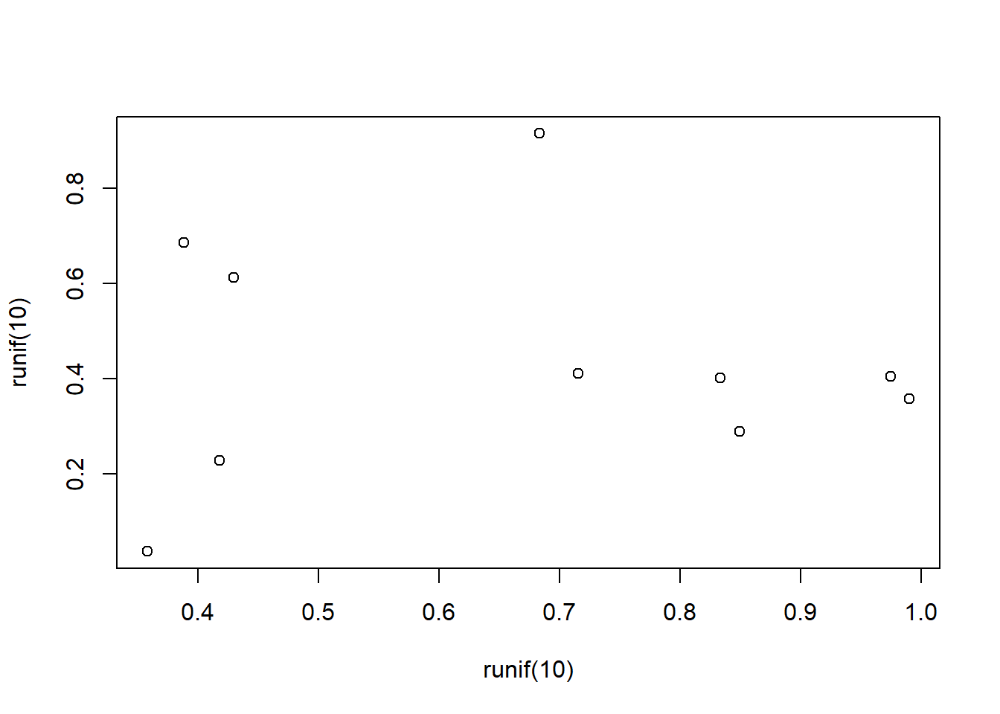

Ok so I can just type as I normally would for any text, no marks needed. Always seperate paragraphs with two carriage returns.
Here is our second paragraph.
Header size determined by number of “#” with less being larger font
Noah Mattheis Pharmacology MS Student University of Vermont
Noah Mattheis
Pharmacology MS Student
University of Vermont
Use astericks for italic and double astericks for bold
Use caret ‘^’ for superscript and
tilda ‘~’ for subscript and 2 tildas
’~~’for strikethrough
Use r in an in-line text:
The value of pi + 10 is 13.1415927.
Use a greater than sign for indented quoted material. Looks nice Ceaser-chan!
| First Header | Second Header |
|---|---|
| Content Cell | Content Cell |
| Content Cell | Content Cell |
Use a single back tick/ backwards quotation mark for
in line fencing of material.
Use triple back tips for fenced block of text
Everything here is a plain text
even with markdown *commands*
Stays until closed with 3 back tips
Blank lines properly spaced
Very nice, Ceaser-chan## [1] 0.4963931 0.9499295 0.6266912 0.9871031 0.4655929 0.6550541 0.1303320
## [8] 0.9706780 0.7261033 0.3761387
Having both be true
## [1] 0.78087844 0.07137003 0.10079032 0.88434430 0.63752753 0.92717378
## [7] 0.58976004 0.73192487 0.12409597 0.35515068Having eval false here
Use a single dollar sign at the beginning and end of equation \(a = b + c\)
To insert a mathematical statement within plain text, no spaces OR use double dollar signs, can be used with spaces, for center and separted equation \[ a = b + c \] Subscripts, using ’_’
‘H_0” important here \[H_0 = Z_{a + b}\] Superscripts, using a caret’^’ \[S = cA^z\] Combining
\[S=cA^z_1 + z_{2 + x}\]
Fraction with variables
\[\alpha = \frac{\beta}{\delta + \gamma_x}\]
Summation signs
\[z = \sum_{i=1}^X{K}\] Just a backslash
\[\backslash\] backslash le gives us less than or equal to \[\backslash \alpha \le b \backslash\]
Mixing text and equations, we need an m box, without it it will smush text together and treat it all as one variable \[P(\mbox{Occurence of Species A}) = Z\]
Back to chunkin’
## [1] 1 2 3 4 5 6 7 8 9 10